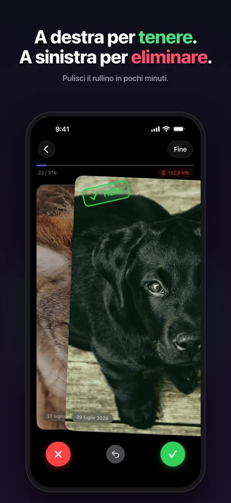

Libera il tuo iPhone.
Swipe a sinistra per eliminare, a destra per tenere.
Swiped pulisce foto e video su iPhone e iPad. Migliaia di foto riordinate in pochi minuti, senza pubblicità, senza abbonamento e senza account. Le tue foto non lasciano mai il telefono.
- Gratis
- Senza pubblicità
- Senza abbonamento
- Senza account
- Niente lascia il tuo iPhone



Come funziona
- 1Scegli un album o tutto il rullino.
- 2Destra per tenere, sinistra per eliminare. Annulla quando vuoi.
- 3Rivedi la selezione, conferma e libera spazio.
L'essenziale, niente di più
Privato per scelta
Tutto avviene sul tuo iPhone. Swiped non raccoglie dati: «Dati non raccolti» su App Store.
Eliminazione sicura
Niente viene eliminato prima che tu abbia rivisto la selezione. Le foto eliminate restano 30 giorni in «Eliminati di recente».
Trova ciò che pesa
Filtra per foto, video o screenshot, per data e per dimensione, per trovare ciò che occupa più spazio.
Contatore di spazio
Vedi in tempo reale quanti megabyte stai per liberare.
Annulla senza limiti
Hai cambiato idea? Torna indietro di quante carte vuoi.
Riprendi dopo
La sessione viene salvata a ogni swipe. Torna domani e continua.
Domande
Swiped è davvero gratis?
Sì. Fare swipe, rivedere ed eliminare è gratis, senza pubblicità, senza abbonamento e senza account. In futuro potrebbero arrivare extra opzionali con acquisto unico, mai in abbonamento.
Le mie foto lasciano l'iPhone?
No. Swiped guarda le tue foto solo sul tuo iPhone. Non ha server e non raccoglie alcun dato.
Cosa succede alle foto eliminate?
Niente viene eliminato senza la tua conferma. Poi iOS le sposta in «Eliminati di recente», dove puoi recuperarle per 30 giorni.
Funziona con Foto di iCloud?
Sì. Anche le foto salvate su iCloud compaiono, ed eliminare una foto in Swiped la elimina ovunque, come nell'app Foto.
Su quali dispositivi?
iPhone e iPad con iOS 16 o successivo, in 9 lingue.
Esiste una versione Android?
No. Swiped è solo per iPhone e iPad. Le app con un nome simile su Android o altrove su App Store non hanno alcun legame con essa.
Swiped: Pulizia Foto
Scarica su App StoreiPhone · iPad · Gratis